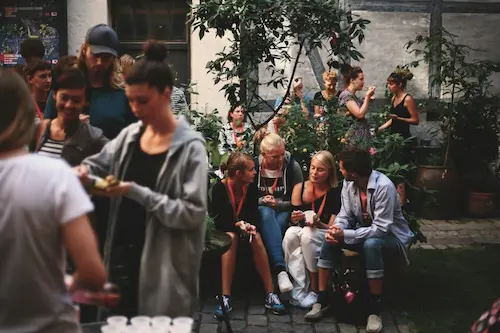

frivillige
Vil du være frivillig?
Vildskud Festival er afhængig af, at der hvert år er en masse frivillige, der har lyst til at være med til at gøre festivalen til en god oplevelse for alle deltagende.
Alle frivillige får mulighed for at se forestillingerne gratis, får mad under deres vagter og muligheden for at møde en masse teaternørder. Jobbet som frivillig består af 2 vagter på 3-4 timer. Der er et infomøde d. 1. august 2022.
Vil du være frivillig, eller har du spørgsmål så skriv til: frivillig@vildskud.dk
pr og some ansvarlig
Vildskud Festival søger PR og SOME ansvarlig – det kan blive dig!
Vi giver dig kunstnerisk frihed til at danne rammerne for festivalens visuelle udtryk! Du bliver en del af et stærkt kunstnerisk team, som brænder for scenekunsten og festiva- len!
Send os en mail på info@vildskud.dk og hør mere!
Rødderne
Bag Vildskud står der hvert år et hold af frivillige arrangører. Arrangørgruppen arbejder med en flad struktur og er altid åben for at få flere med. Sammensætningen af gruppen forandrer sig fra år til år og derfor forandrer måden hvorpå arbejdet med festivalen udføres sig også konstant.
Hvis du ønsker at være en del af arrangørgruppen til Vildskud Festival 2020 så send en motiveret ansøgning til info@vildskud.dk. Vi tager imod ansøgninger hele året, så tøv ikke med at kontakte os.
Som arrangør i Vildskud kan du få erfaring inden for:
- Projektledelse
- Budgetplanlægning
- PR-strategier på SoMe platforme
- Udfoldelse af pressemeddelelser
- Udfoldelse af pressemeddelelser
- Networking og samarbejde med professionelle scener i København
- Planlægning og udvikling af Danmarks største festival for det scenekunstneriske vækstlag!